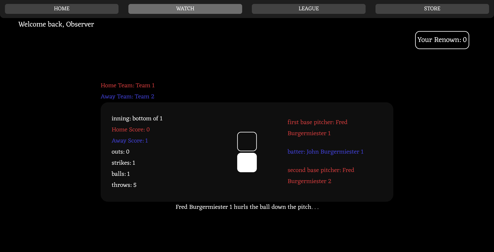
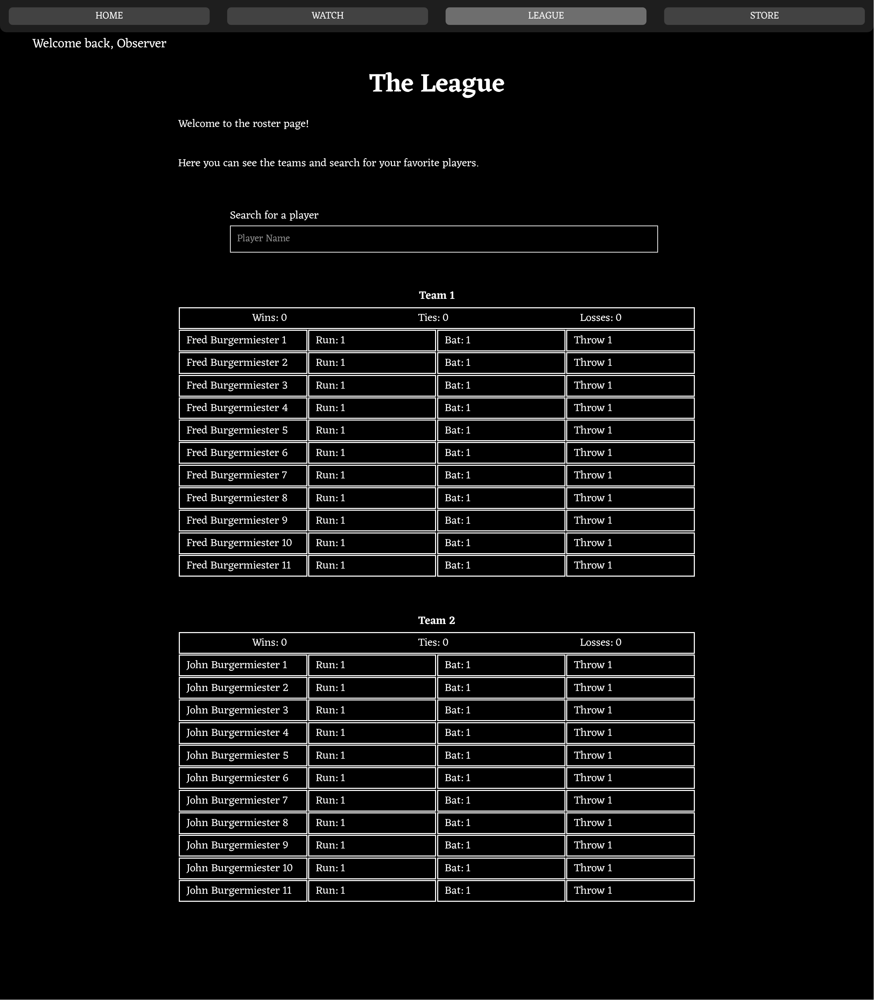

Project showcase · C# · web game
Briscket
A spectator-focused cricket-baseball hybrid where teams of AI players compete while viewers earn Renown and influence the game.
How it works
Briscket turns a live match into a web experience. Spectators can watch the game, choose a favorite team, earn currency, and spend it in the store to affect future matches.


Highlights
- Created a multi-page web interface with a shared navigation system.
- Connected the frontend to a custom API and token-based spectator system.
- Built league, watch, store, contract, and inventory experiences.